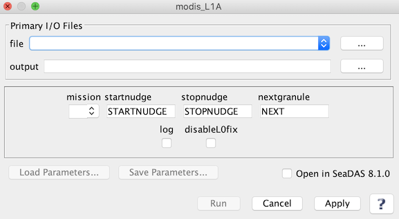

| modis_L1A | |
Creates a MODIS Level 1A file from an input Level 0 file.
Location
Details
Command Line Usage
SeaDAS-Toolbox -> SeaDAS Processors -> MODIS -> modis_L1A
modis_L1A creates a MODIS Level 1A file from an input Level 0 file.
|  |
| UI Element Name | Type | Description | Required/Optional | Default Value |
| file | text | MODIS_L0_file name | Required | |
| output | text | Output L1A filename | Required | '(A|T)YYYYDDDHHMMSS.L1A_LAC' |
| mission | text | Modis mission:
A: Aqua
T: Terra
|
Optional | |
| startnudge | text | Level-0 start-time offset (seconds) | Optional | |
| stopnudge | text | Level-0 stop-time offset (seconds) | Optional | |
| nextgranule | text | Next L0 granule (for geolocation of last scan; sets stopnudge=0) | Optional | |
| log | boolean | Save processing log file(s) | Optional | false |
| disableL0fix | boolean | Disable use of l0fix_modis utility for corrupt packets | Optional | false |
| UI Element Name | Type | Description |
| Browser Button | Button | Selects infile/ofile |
| Load Parameters ... | Button | Reads in previously saved parameters and populates the fields in GUI. |
| Store Parameters ... | Button | Saves the current arguments in GUI in a file. |
| Run | Button | Executes the modi_L1A command with arguments provided in the UI. |
| Cancel | Button | Closes current processor GUI. |
| Apply | Button | Makes current arguments effective. |
| Open in SeaDAS | Checkbox | If selected, the ofile will be added to the open products list right after its generation. |
| ? | Button | Displays the help content of the current command. |